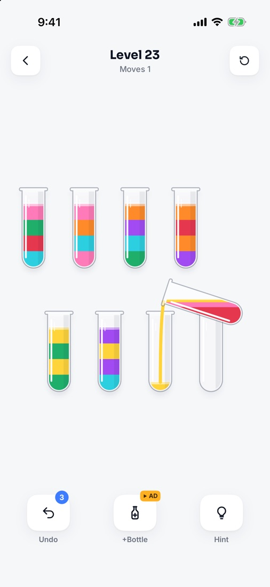
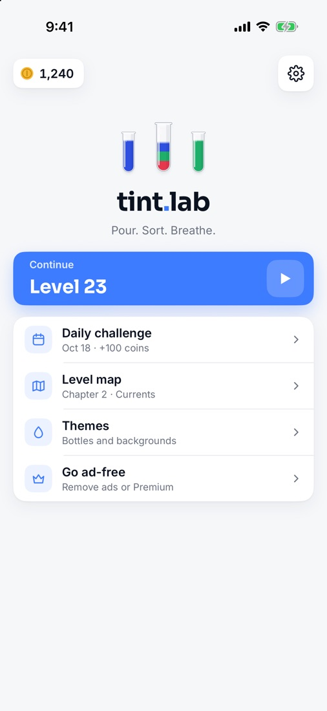
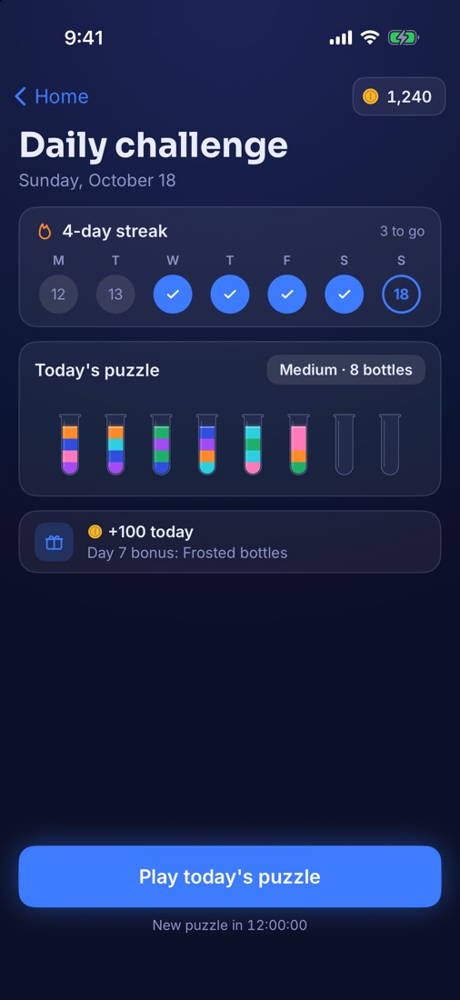
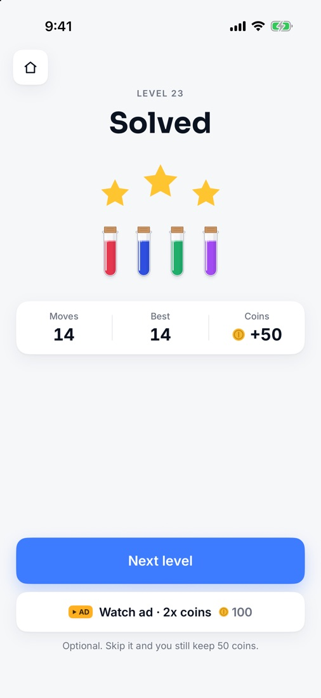
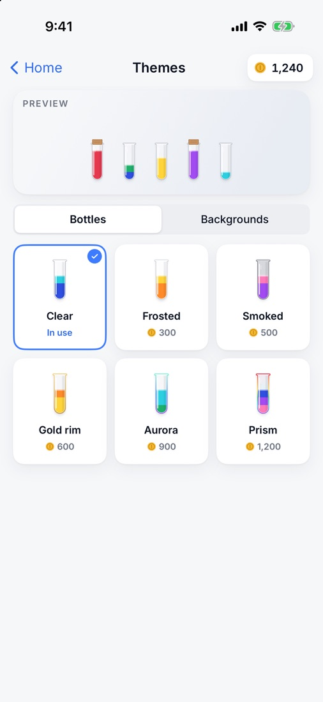

Quick play
Taps never wait for the animation. Line up your next pour while the last one is still running.
Pour. Sort. Breathe.
Tap a tube, tap another, and the top colour pours across. Sort every colour into its own tube. Calm, tidy, and every level has a way through.


How it plays
A water sort puzzle, also called colour sort or bottle pour, is a logic game played with glass tubes of coloured liquid. The colours start mixed in layers, and you pour from one tube to another until every tube holds a single colour. You can only pour onto the same colour or into an empty tube, and only where there's room, so the order of your pours matters. Tint Lab is a water sort puzzle for iPhone and Android: 200 levels in 10 chapters, a new daily puzzle, quick play that never makes you wait, and English and Arabic.
Tap a tube and it lifts. Tap a second tube and the top colour pours across.
Pour onto a matching colour or into an empty tube, and only where there's room.
A full tube of one colour gets a cork. Cork every colour to clear the level.
Features
Easy to learn, slowly harder: more colours, then hidden layers that only show their colour once you uncover them.
Taps never wait for the animation. Line up your next pour while the last one is still running.
From Shallows to Deluge. Earn up to three stars by matching the best move count. Every level is checked by a solver.
One new puzzle a day, the same for everyone. Keep a streak for bonus coins; day 7 unlocks Frosted bottles.
Frosted, Smoked, Gold rim, Aurora, Prism and backgrounds, bought with the coins you earn.
Lab Glass by day, Night Glow by night. Follows your phone, or pick one in Settings.
Turn them on and every liquid gets its own shape, in every layer.
A full right-to-left layout in Arabic. Switch language any time in Settings.
No account and no sign-in. Your progress stays on your phone.



Price
Every level and the daily challenge are free. Ads keep it that way, and they never appear while you play:
One purchase, yours for good.
One purchase, yours for good.
No subscription. The app shows the price in your currency before you buy.
Support
Yes. Every level and the daily challenge are free, supported by ads that never appear while you play. Two optional one-time purchases are available: Remove ads and Premium. There's no subscription.
Remove ads takes away the Home banner and the ads between levels.
Premium does the same, and adds unlimited undo and every bottle and background theme. If you buy Premium you don't need Remove ads.
Open Tint Lab, tap the gear on Home for Settings, then Purchases → Restore purchases. Use the same Apple Account (iPhone) or Google account (Android) you bought it with. Restoring is free.
A banner on the Home screen, and a full-screen ad between some levels, only after level 10 and at most once every three levels. Ads for an extra tube, more undos or double coins only play when you choose them. No ad ever appears during a level.
200 levels in 10 chapters of 20, from Shallows to Deluge, plus a new daily challenge every day. Every level is checked by a solver, so there's always a way through. You can replay any level from the level map.
You get three free undos per level, a free hint, and an extra empty tube if you need one. You can also restart the level any time. If no move is left, the game tells you and offers a way out, and your moves are kept.
Yes. Every level is made on your phone, so you can play without internet. Only ads and purchases need a connection.
Yes. Tint Lab is fully in English and Arabic, with a right-to-left layout in Arabic. Switch in Settings → Language. The tubes themselves aren't mirrored.
There's no account and no sign-in. Your levels, stars, coins, streak and settings are saved only on your phone, and there's no sync between devices.
iPhone and iPad with iOS 17 or later, and Android phones with Android 8.0 or later.
On iPhone, tracking is off unless you allow it when the app asks; change it later in Settings → Privacy & Security → Tracking.
Where a consent choice is required, such as in the EEA and the UK, open Tint Lab and go to Settings → Privacy & ad choices to review it. More in the privacy policy.